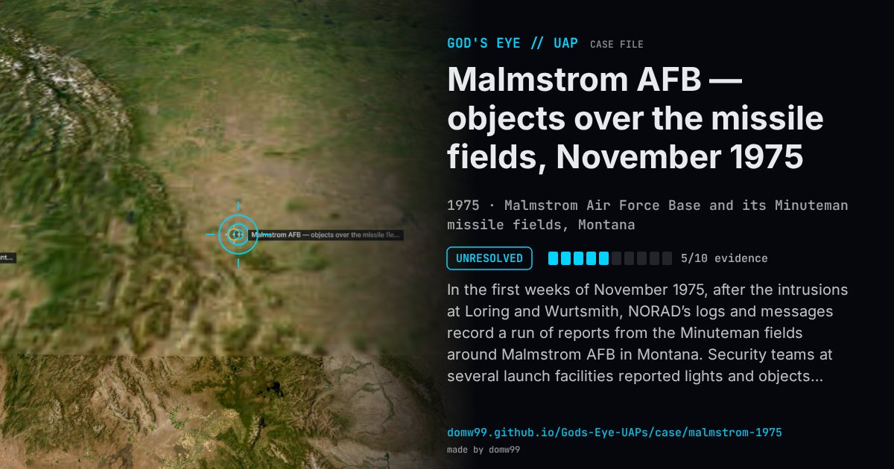

Malmstrom AFB — objects over the missile fields, November 1975

In the first weeks of November 1975, after the intrusions at Loring and Wurtsmith, NORAD’s logs and messages record a run of reports from the Minuteman fields around Malmstrom AFB in Montana. Security teams at several launch facilities reported lights and objects; Malmstrom’s search and height-finder radars carried a target between about 9,000 and 15,600 ft moving at only seven knots; witnesses said it sounded like a jet, and the FAA said no jets were in the area. F-106 interceptors scrambled from Malmstrom could not make contact because of the darkness and the target’s low altitude. The NORAD messages, released under the Freedom of Information Act by 1979, give no explanation. Later accounts add a security alarm at launch facility K-7, a glowing disc “the size of a football field” and tampered warheads; those details come from interviews years afterwards, not from the released records.
What was seen
Shape: Lights over the launch facilities; on radar, slow targets that sounded like a jet
Witnesses: Missile-site security teams, Air Defense radar operators and F-106 crews
Duration: Several nights in early November 1975
Sources
- The Black Vault — records on objects over Malmstrom AFB, November 1975 (FOIA)
- CIA Reading Room — “U.F.O. files: the untold story” (1979), quoting the NORAD messages
Browse
- United States
- 1970s
- Unresolved
- Military encounters
- Official government documents
- Military witnesses
- Radar tracking
- Lights and fireballs